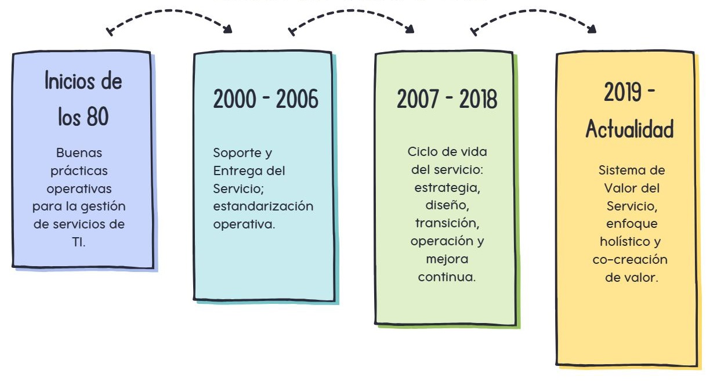

RUEDA DE ATRIBUTOS

ALINEACIÓN TI - NEGOCIO
Garantiza que los servicios de TI estén alineados con los objetivos estratégicos del negocio, contribuyendo directamente a la creación de valor.
CALIDAD Y CONFIABILIDAD
Permite diseñar, entregar y operar servicios de TI útiles y confiables, mejorando la experiencia del usuario y la satisfacción del cliente.
ADAPTACIÓN Y MEJORA CONTÍNUA
Facilita la respuesta al cambio, la optimización de costos y la gestión de riesgos mediante un enfoque estructurado de mejora continua.
RUEDA DE ATRIBUTOS

ITIL v4
Gestión de servicios enfocada en valor y mejora continua.

COBIT 2019
Gobierno y gestión de TI orientados a objetivos del negocio.

ISO 20000
Estándar internacional de gestión de servicios de TI.

Agile
Entrega incremental y adaptación al cambio.
DevOps
Integración continua entre desarrollo y operaciones.
Lean
Optimización de procesos y eliminación de desperdicios.
CONCEPTOS CLAVE

VALOR
Beneficio percibido por el cliente al alcanzar sus objetivos mediante el uso de un servicio.
CO-CREACIÓN DE VALOR
Proveedores y consumidores participan conjuntamente en la generación de valor.
SERVICIO
Medio para facilitar resultados deseados sin que el cliente gestione costos y riesgos específicos.
PRODUCTO
Conjunto de recursos configurados que permiten ofrecer uno o más servicios.
RELACIÓN DE SERVICIO
Interacción continua entre proveedor y consumidor para la provisión, uso y gestión del servicio.
RESULTADOS
Logros o efectos obtenidos por el cliente a través del uso del servicio.
COSTOS
Recursos financieros necesarios para proveer y consumir un servicio.
RIESGOS
Posibles eventos que pueden afectar negativamente el logro de los resultados esperados.
UTILIDAD
Capacidad del servicio para cumplir su propósito y satisfacer una necesidad.
GARANTÍA
Aseguramiento de que el servicio funcionará de manera confiable bajo condiciones acordadas.
MODELO ITIL
ITIL 4 adopta un enfoque holístico, flexible y orientado a la creación de valor, alineando la gestión de servicios de TI con las necesidades reales del negocio.
Su núcleo es el Sistema de Valor del Servicio (SVS), el cual describe cómo los componentes y actividades de una organización trabajan de manera integrada para facilitar la creación de valor.
El SVS está compuesto por los siguientes elementos:
- Principios guía
- Gobernanza
- Cadena de valor del servicio
- Prácticas
- Mejora continua
LÍNEA DE TIEMPO
BIBLIOGRAFÍA
- AXELOS. (2019). ITIL® Foundation: ITIL 4 edition. The Stationery Office.
- ISACA. (2019). COBIT® 2019 framework: Governance and management objectives. ISACA.
- Schwaber, K., & Sutherland, J. (2020). The Scrum guide: The definitive guide to Scrum. Scrum.org.
- Kim, G., Humble, J., Debois, P., & Willis, J. (2016). The DevOps handbook: How to create world-class agility, reliability, and security in technology organizations. IT Revolution Press.
- International Organization for Standardization. (2018). ISO/IEC 20000-1:2018 Information technology — Service management — Part 1: Service management system requirements. ISO.